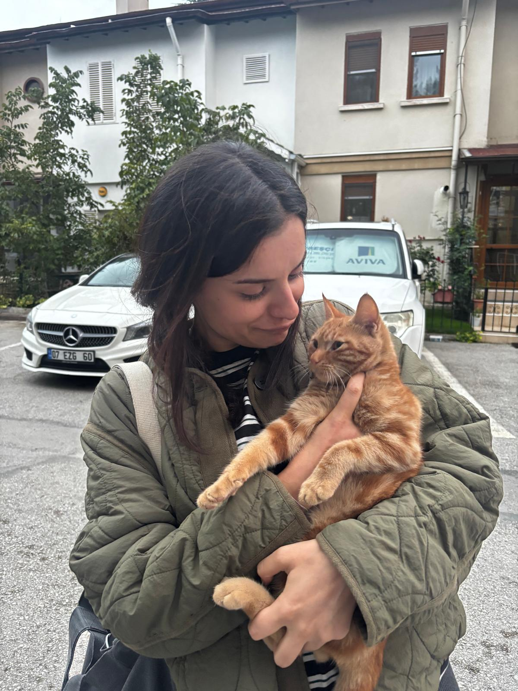

01 / PURR-SONAL INTRODUCTION
Hello, curious explorer! 🐈

Just me & a little feline friend ♡
A little about me
Hello! I am a fourth-year Geomatics Engineering student at Hacettepe University in Ankara, Türkiye.
My academic interests include Geographic Information Systems (GIS), spatial data analysis, and web mapping technologies.
Outside of engineering, I love traveling, exploring new cities, and discovering different places and cultures.
This website combines my interest in geography, technology, and exploring the world.
02 / MY ACADEMIC JOURNEY
Learning, growing & exploring 🎓
Hacettepe University
B.Sc. in Geomatics Engineering
Fourth-year undergraduate student at the Department of Geomatics Engineering in Ankara, Türkiye.
03 / TOOLS IN MY BACKPACK
My technical toolkit 🧰
QGIS
Geographic Information Systems, mapping, and spatial data visualization.
Netcad
Digital mapping and geomatics engineering applications.
Python
Programming and working with data.
04 / PLACES I'VE LEARNED
My internship journey 🐾
ASL-Yıldızlar
Construction Site Internship
I completed a construction site internship as part of my Geomatics Engineering education.
Başarsoft
POI Internship | Data Department
I completed an internship in the Data Department, focusing on Point of Interest (POI) data.
05 / BEYOND THE MAP
Collecting places, not just coordinates 🌍
Traveling is one of my favorite things in life. Every new city, street, and landscape gives me a different perspective.
I enjoy discovering new places and cultures. My love for traveling is also connected to my curiosity about maps, geography, and the world.
"Every place has a story waiting to be discovered."
06 / MY DIGITAL CATLAS
Let's explore the world! 🗺️
Explore my interactive Web GIS projects built with OpenLayers and Leaflet.
These maps demonstrate interactive geographic visualization, zoom-dependent markers, and map navigation.
Open My Interactive Maps →